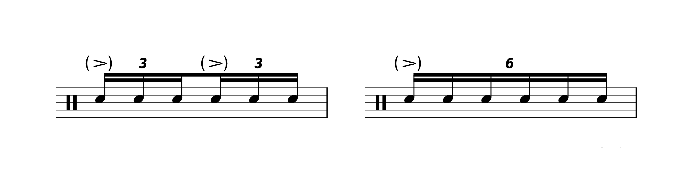
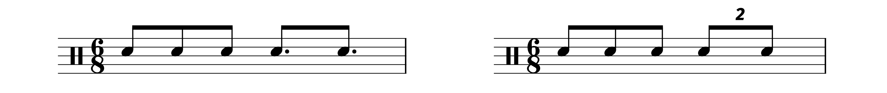
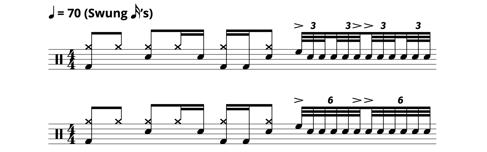
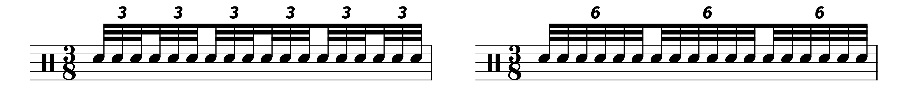
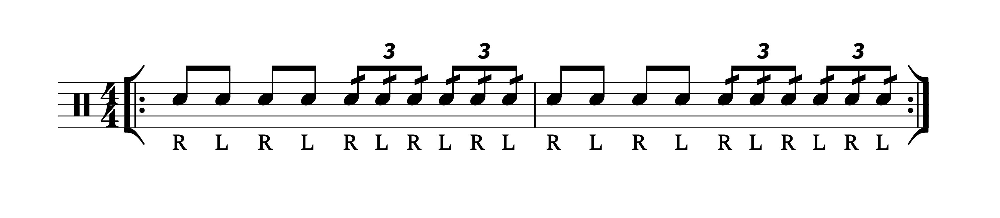
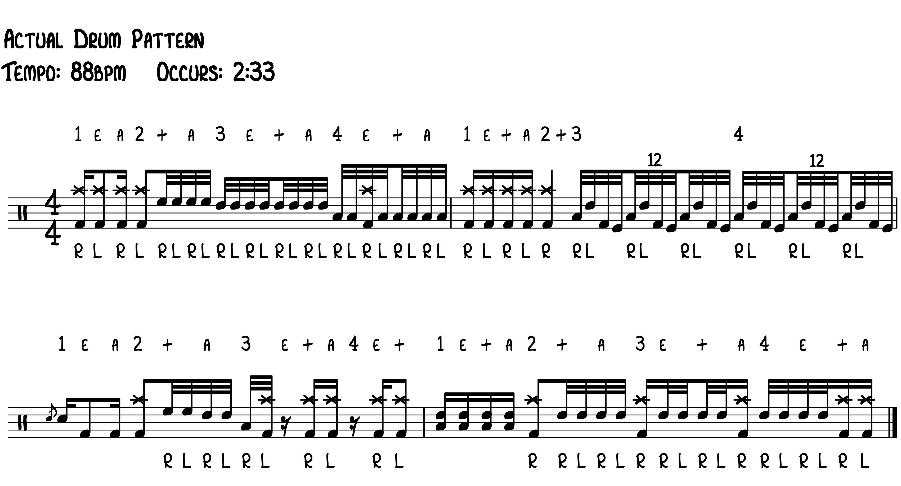
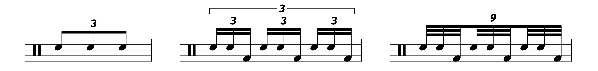
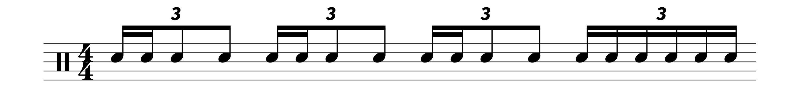

Is There Any Difference Between the Triplet and the Sextuplet? And What About the 12–Let?
Posted on February 6, 2021

This is a pretty niche topic, but I wanted to share some thoughts I had on it, and I can imagine that some other musicians might actually be intrigued themselves if they were to consider this question, so just bear with me.
Back in high school, my marching band would warm up with a tune called “Maximum Strength Warmup” by Gary P Gilroy. It’s actually a fun piece of music, and the drumline part is pretty interesting — it features a neat collage of some famous drumline warm–ups, such as eight on a hand, double beat, and triplet diddle.
It’s also pretty challenging, especially for a high school drumline (and especially for my high school drumline, lolrip). The bass drums have some fairly intricate split rhythms during the finale, while the snare drums have a measure that features a 17 stroke role written as 32nd notes. The song is played at 132 BPM, so those doubles are cooking. And the quads (my instrument) have some pretty fun movements around the drums, including some scrapes that I really didn’t even appreciate until I was older.
The reason why I bring this song up is because of the final four measures:
This was the first time I had ever seen a sextuplet rhythm, and I remember being a bit confused about how I was supposed to play it. I didn’t wanna ask anyone because then I would look like a noob, so in my head, I just thought I would play the sextuplet as two sets of 16th notes triplets. But I started to wonder: if I was supposed to play the rhythm as 16th note triplets, why not just write the rhythm with 16th note triplets? There has to be a reason why the composer specifically used the sextuplet rhythm.
Eventually, I did some research, but I haven’t really found an answer that’s to my satisfaction. Most of the answers describe different subtleties regarding how you play a sextuplet rhythm versus playing triplet rhythms of the same subdivision. I guess because 16th note triplets feature two groups of three, there is an implied accent that the sextuplet doesn’t have:
You could compare it to the way we differentiate certain time signatures; that is, the difference between 4/4 and 2/4, or perhaps 7/4 and 7/8.
But there’s something about this sextuplet interpretation that just doesn’t gel with me — we’re not talking about overarching rhythmic structure, we’re talking about specific executions of the written music.
I guess the obvious answer is that the sextuplet is specifically for six–note phrases, but because triplets are so ubiquitous, I imagine that most could just split up a six–note phrase into two three–note phrases without issue. Going back to the time signature comparison, it would be like using 8/8 instead of 4/4 if you have a 3+3+2 rhythmic structure. Maybe 8/8 is the correct answer, but using 4/4 would still be fine.
This dilemma isn’t that uncommon. Adam Neely shared a video a while ago exploring the differences (if any even exist) between these two rhythms:
Adam had a discussion with some other musicians, and the point that stuck with me the most was the idea that the dotted 8ths encourage you to subdivide 16th notes within a strong 6/8 feel, while the duplet is more about just plowing through the 6/8 feel.
In terms of sound and performance, however, my conclusion is that, no, there really isn’t a difference in how you would play the two rhythms, but it might depend on the situation. A drummer in the video tried to express a difference in execution, but honestly, it was pretty nebulous.*
To further convolute things with the sextuplet, I found a short article describing four possible interpretations of the sextuplet:
In something like an orchestra, the interpretation of the sheet music by the performer and conductor is an important part of that discipline. But in the case of drumline sheet music, it’s hard to imagine a performer adding in articulations that aren’t there and using the way the notes are grouped to justify it. Honestly, if you’re a composer and you want someone to play an accent, just write in the damn accent!
At the end of the day, I really don’t know why “Maximum Strength Warmup” uses the sextuplet. I do have one theory: the song was written in 2001, so it’s quite possible that the sheet music was engraved with a piece of software that couldn’t beam groups of 16th note triplets together. When I started using MuseScore back in 2013, there was no way to beam groups of 16th note triplets together. So if you wanted your score to look good, you basically had to use sextuplets.
It’s also worth considering that, back in the era of hand engraving, it was probably easier to write one group of six rather than two groups of three. Perhaps the sextuplet is just a holdover from a bygone time.
Let’s not beat up on the sextuplet too much; I can actually think of some situations where an arranger might regard a sextuplet as being easier to read. For this example, I’m going to use the Jimi Hendrix tune “Bold as Love”. The song itself is pretty slow, and unsurprisingly Mitch Mitchell uses the tempo as an opportunity to show off some fast triplet singles. Here’s a fill heard at the 1:33 mark that I have notated two different ways:
For me, I would prefer to read the bottom example. It’s easier for me to keep track of where the beat is when I’m reading two groups of six versus four groups of three.
Here’s another demonstration:
This is an extreme and contrived example, but nonetheless, I still have an easier time reading the sextuplets.
I also think the difference is clear in an 8th note based time signature, like 3/8:
So if you see a sextuplet in the wild, here are a few possible reasons why:
- The music was hand engraved by someone who just thought it was easier to write one 6 instead of two 3s.
- The music was engraved by someone who spent a lot of time looking at old sheet music and now thinks sextuplets are always the right answer.
- The music was engraved with a piece of software that has lackluster beaming capabilities.
- The music was engraved by someone who thought the sextuplet would be easiest to read.
- Music was engraved by someone who wanted to communicate some esoteric subtleties with the sextuplet instead of actually writing them in.
Since we’re at it, we might as well talk about the rare duodecuplet (or the 12–let if you prefer). I have encountered the 12–let twice in my life. First was in Stick Control, where it’s used to rather clumsily notate a 13 stroke roll:
You’re basically supposed to play the above example like this:
Why a 12–let? Maybe it’s to help emphasize that the 13 stroke roll is supposed to be one unified phrase, but ultimately I think notating it this way is unnecessary (this harkens back to some of the reservations I shared earlier about telling beginners to go through Stick Control).**
The second example I have is a bit more interesting: it comes from a transcription of the famous “Tom Sawyer” drum solo, courtesy of Rob Litten from drumstheworld.com — note the use of a 12–let for the big double bass drum fill:
I was a bit confused the first time I saw this, but then I soon realized what Rob is going for. In this situation, the 12–let is supposed to work a lot like the nonuplet. Usually, nonuplets are felt/counted by dividing each note of a triplet into 3 equal notes. Instead of using triplets within triplets, the nonuplet is easier to write and (ostensibly) easier to read:
If you listen to the “Tom Sawyer” drum solo, you can hear that the double kick fill clearly follows an overarching 8th note triplet pulse. So this situation, we are dividing each note of a triplet into four equal notes:
This time around we don’t have to worry about nested tuplets, so it’s really a matter of what is going to be easiest for the average reader. Again, because triplets are so ubiquitous, it’s really anyone’s guess. But this could be a neat tool for you to use as a composer/arranger/engraver.
And of course, you can use 12–lets as in the following example (warning — you might consider this excerpt to be a crime against humanity):
Let’s be realistic here: we’re talking about 64th notes, an exceedingly rare subdivision, and I have a hard time imagining that your typical drummer could play the above example at anything faster than 35 BPM, which means we’re also talking about exceedingly rare tempo markings.
To further add to the confusion, you can also just take a triplet and just subdivide the crap out of it. Here’s that fill from “Bold as Love” notated a third way:

While it looks very ugly, this is nonetheless a totally valid rhythm. Does it get its own special set of rules? Who can say... again, subdividing triplets might make reading easier in the context of the music around it:
*I have something fun to add to this discussion: I’ve actually seen sheet music that combines duplets and dotted 8th rhythms together!
**I’m really curious about how GL Stone originally wrote these rhythms. The version of Stick Control that everyone has is an updated version from the 90s. I haven’t been able to find an old copy to see what the original rhythms looked like.